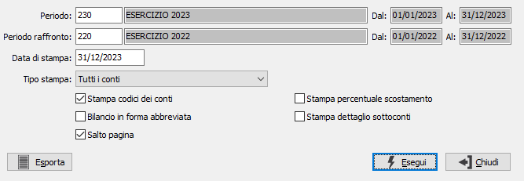

La pressione sul pulsante Esportazione non avvia
la stampa, ma l'esportazione verso Excel.
La pressione sul pulsante Esportazione non avvia
la stampa, ma l'esportazione verso Excel.Stampa bilancio
Il programma esegue le stampe o l’esportazione dei bilanci secondo la IV Direttiva CEE, prelevando gli importi dalla tabella Valori IV Direttiva CEE. Accedendo al programma appare la seguente finestra video:

PERIODO: Indicare il periodo per il quale si desidera effettuare la stampa; viene proposto il periodo che in base alle date può essere associato all'esercizio contabile corrente.
PERIODO DI RAFFRONTO: Indicare il periodo da confrontare con il periodo principale: se il periodo principale è tipo Esercizio viene proposto il periodo che in base alle date può essere associato all'esercizio contabile precedente; i periodi devono essere dello stesso tipo ed il campo è obbligatorio.
DATA DI STAMPA: indicare la data di stampa.
TIPO STAMPA: Valori possibili: Tutti i conti; Solo i conti movimentati;
STAMPA CODICI DEI CONTI: check box per definire il livello di dettaglio della stampa. Valori possibili:
vuoto = non stampa i sottoconti dell’ultimo livello;
spunta = stampa i sottoconti dell’ultimo livello.
BILANCIO IN FORMA ABBREVIATA: check box per definire la modalità di stampa. Valori ammessi:
vuoto = stampa in forma completa
spunta = stampa in forma abbreviata.
SALTO PAGINA: effettua un salto pagina al termine delle sezioni attività, passività e conto economico (casella con segno di spunta).
STAMPA PERCENTUALE DI SCOSTAMENTO: definisce se sul bilancio deve essere stampata la percentuale di scostamento tra i valori degli esercizi.
STAMPA DETTAGLIO SOTTOCONTI: se spuntato sarà stampato, per ogni sottoconto CEE, il dettaglio dei sottoconti del piano dei conti associati; il parametro ha effetto se l'elaborazione del bilancio è stata effettuata con la generazione del dettaglio dei sottoconti o se sono stati inseriti manualmente.
La pressione sul pulsante Esportazione non avvia
la stampa, ma l'esportazione verso Excel.
La pressione del bottone Esegui determina l’esecuzione della stampa.